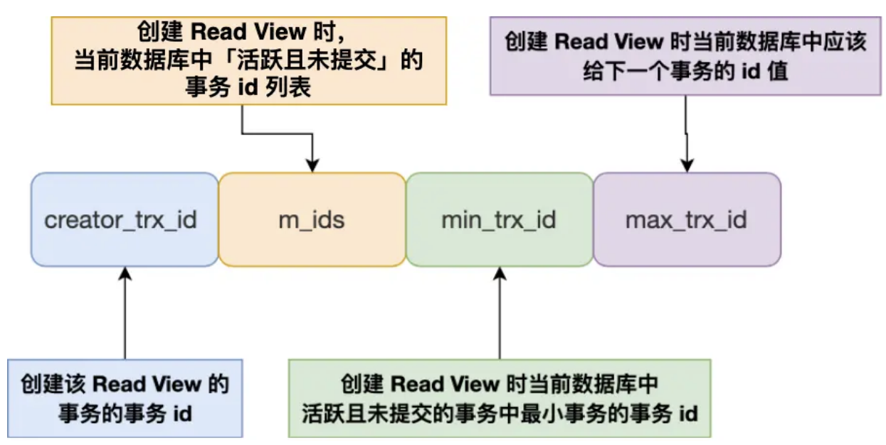

MySQL-事务
事务基础
事务特性和原理
ACID （原子性、一致性、隔离性、持久性）
- 原子性Atomicity，通过undolog保证，一个事务中的所有操作要么全部完成，要么全部不完成，并且事务执行过程中报错会回滚到事务开始的阶段
- 一致性Consistency，通过持久性+原子性+隔离性来保证，事务操作前后，数据满足完整性约束，数据库保持一致性状态
- 隔离性Isolation，通过锁和MVCC保证，数据库允许多个并发事务同时对其数据进行读写和修改的能力，隔离性可以防止多个事务并发执行时由于交叉执行而导致数据的不一致，多个事务同时使用相同的数据时，不会相互干扰，每个事务都有一个完整的数据空间，对其他并发事务是隔离的。
- 持久性Durability，通过redolog保证，事务处理结束后，对数据的修改就是永久的，即便系统故障也不会丢失。
并发事务问题
服务端允许多个客户端连接，处理多个事务可能出现的问题：脏读、不可重复读、幻读
- 脏读：一个事务读取到另外一个事务未提交事务修改过的数据
- 不可重复读：一个事务内多次读取同一个数据，出现前后读取到的数据不一致
- 幻读：一个事务内多次查询某个符合条件的记录数量，出现前后查询数量不同
事务隔离级别
四种隔离级别
- 读未提交
- 一个事务还没提交，它做的变更其他事务就可以看到
- 出现问题脏读、不可重复读、幻读
- 实现：可以读取到未提交的数据，所以直接读取最新的数据就行了
- 读已提交
- 一个事务提交之后，它做的变更其他事务就可以看到
- 出现问题不可重复读、幻读
- 实现：MVCC
- 可重复读
- 一个事务执行过程中看到的数据，一直跟这个事务启动时看到的数据一致（MySQL默认隔离级别）
- 出现问题幻读
- 实现：MVCC
- 串行化
- 对记录加上读写锁，在多个事务对这条记录进行读写操作时，如果发生读写冲突，后访问的事务必须等待前一个事务完成才能执行
- 实现：加读写锁避免并行访问
安全等级：串行化>可重复读>读已提交>读未提交
可重复读的幻读问题
可重复读很大程度避免了幻读，但是没有完全解决了幻读
- 对于快照读。当事务 A 更新了一条事务 B 插入的记录，那么事务 A 前后两次查询的记录条目就不一样了，所以就发生幻读。
- 对于当前读，如果事务开启后，并没有执行当前读，而是先快照读，然后这期间如果其他事务插入了一条记录，那么事务后续使用当前读进行查询的时候，就会发现两次查询的记录条目就不一样了，所以就发生幻读。
例子（可重复读发生幻读、快照读）：
- 可重复读隔离级别下，事务A第一次执行普通的select生成一个ReadView，之后事务B向表中插入一条id=1的数据然后提交事务
- 接着，事务A对id=1的数据进行更新操作（update是当前读，直接读取最新版本），在这时候，这条新纪录的trx_id隐藏列就变成了事务A的id
- 之后，事务A再使用普通select查询id=1的记录就可以查询到了（事务自己修改的记录永远对自己可见
1 | |
可重复读怎么保证不发生幻读：
- 开启事务之后，执行
select ... for update当前读，对记录加上next-key-lock，避免其他事务插入新记录，避免幻读
串行化
串行化通过行级锁实现的，普通的select语句会对记录加上S（共享读）型的next-key锁，其他事务就无法对这条记录进行增删改操作，避免了脏读、不可重复读、幻读
MVCC
原理
MVCC是多版本并发控制，核心思想是维护一个数据的多个版本，实现非锁定读机制，让读写操作不相互阻塞。
主要是依赖三个核心组件：
- 隐藏字段
- trx_id：最近一次修改该行的事务id
- roll_pointer：指向undolog中该行的上一个版本，形成版本链
- row_id：如果表没有主键和唯一索引，自动生成一个隐式行id
- undolog版本链：每次事务修改一行数据时，会把旧版本写入undolog，通过roll_pointer串成一条链表，表头是最新的版本，越往后越旧
- ReadView：快照读生成的一个可见性视图，包含四个重要字段
- m_ids：创建ReadView时，当前数据库中活跃事务列表（启动但是未提交的事务）
- min_trx_id：活跃事务列表中最小的事务id
- max_trx_id：活跃事务列表中最大的事务id+1，也就是应该给下一个事务分配的id
- creator_trx_id：创建ReadView的事务自身的id

可见性判断
- trx_id == create_trx_id：当前事务id==创建该readview的事务自身的id，自己修改的可见
- trx_id < min_trx_id：当前事务id小于活跃事务列表中最小的事务id，说明这个版本是在创建该readview前已经生成的，可见
- trx_id >= max_trx_id：当前事务id大于等于活跃事务列表中最大事务id+1，说明这个版本是在创建该readview后已经生成的，不可见
- min_trx_id<trx_id < max_trx_id：当前事务在最小活跃事务id和下一个分配事务id之间，判断当前事务id在不在活跃事务id列表里
- 在，说明生成这个版本的事务还没提交，不可见
- 不在，说明生成这个版本的事务已经提交，可见
如果是不可见的，就沿着undolog链找下一个版本，重复判断，直到找到可见的或者为空
RC和RR区别：
- RC，读已提交，每次select都会重新生成一个readview，能看到其他事务最新提交的数据
- RR，可重复读，只有第一次select才会生成readview，后续复用，整个事务期间看到的快照是一致的
讲一下整个判断的流程 比如开启事务 读取一行数据 怎么判断是不是可见的
整体流程：
执行 SELECT
↓
是否有 ReadView？（RR下复用，RC下每次新建）
↓ 没有则创建
拿到记录的版本链头部
↓
用 trx_id 套四条可见性规则
↓
可见 → 返回该版本数据
不可见 → 沿 roll_pointer 找上一个版本，重复判断
↓
遍历到链尾都不可见 → 该行对当前事务不可见，跳过
核心就是一个循环：拿版本、判断、不可见就往前找，直到找到第一个可见版本为止。
其他
update是不是原子性
是的，通过锁和undolog日志保证原子性
- 执行update的时候，会加行级锁，保证一个事务更新一条记录的时候不会被其他事务干扰
- 事务执行过程中，生成undolog，如果事务执行失败，通过undolog进行回滚
滥用事务或者一个事务很多sql的弊端
事务的资源在事务提交之后才会释放，比如存储资源、锁等
如果事务中很多sql，那么会导致：
- 事务太多sql，锁的数据过多，可能导致大量死锁或者锁超时
- 回滚记录会占用大量存储空间，事务回滚时间长。在MySQL中，实际上每条记录在更新的时候都会同时记录一条回滚操作。记录上的最新值，通过回滚操作，都可以得到前一个状态的值，sql 越多，所需要保存的回滚数据就越多。
- 执行时间长，容易造成主从延迟，主库上必须等事务执行完成才会写入binlog，再传给备库。
- 所以，如果一个主库上的语句执行10分钟，那这个事务很可能就会导致从库延迟10分钟
RR和RC区别
- 快照读：两者在生成readView的时机是不同的
- 在读已提交隔离级别下：事务中的每次查询前都会创建一个新的ReadView。新建的ReadView会更新creator_trx_id以外的其余字段，因此不可重复读现象依然存在
- 可重复读隔离级别下：只会在事务中的第一次查询时创建ReadView，同一个事务中后续所有的查询共用一个ReadView，由此便解决了不可重复读的问题
- 锁机制
- RR只会对索引加记录锁
- RC为了解决幻读要么使用快照读，要么使用当前读，对索引会加记录锁、间隙锁、临键锁
- 主从同步
- RR只支持row的binlog
- RC支持statement、row、mixed三种格式的binlog
MySQL-事务
https://yb0os1.github.io/2026/03/16/MySQL-事务/